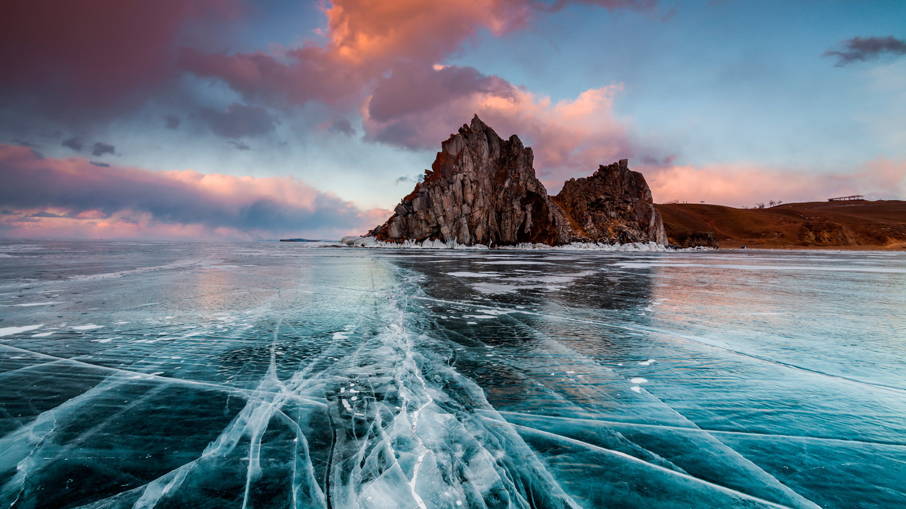
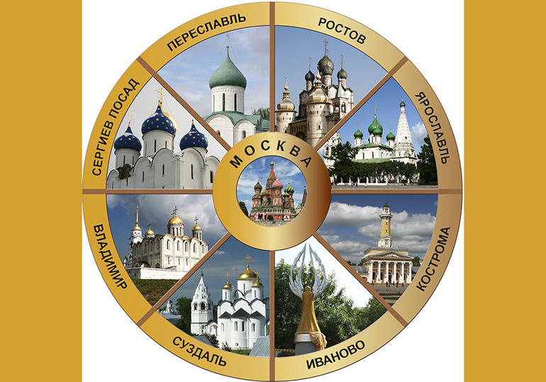
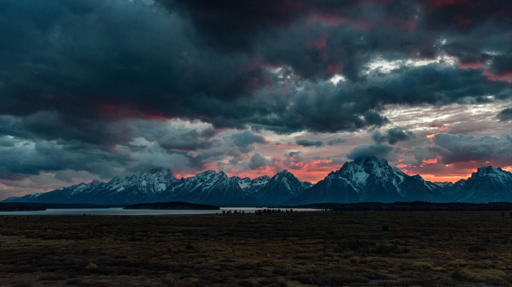
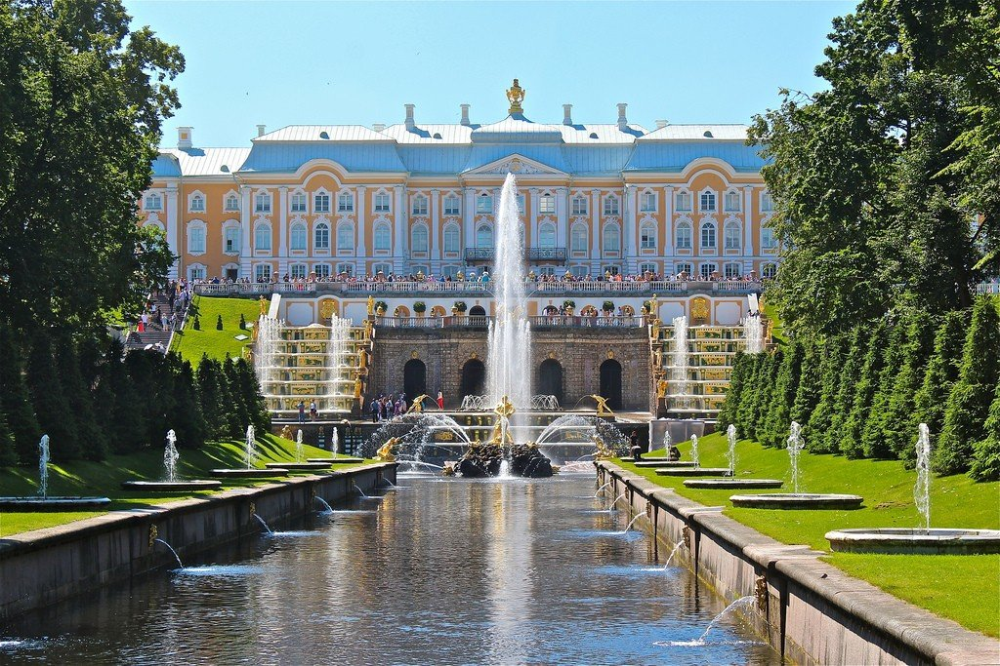
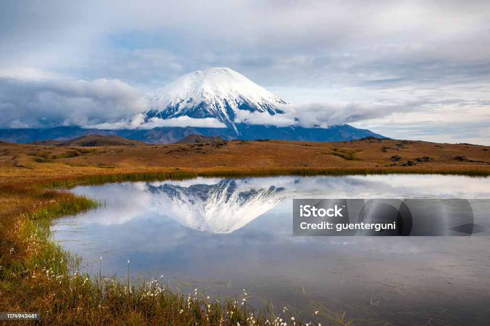
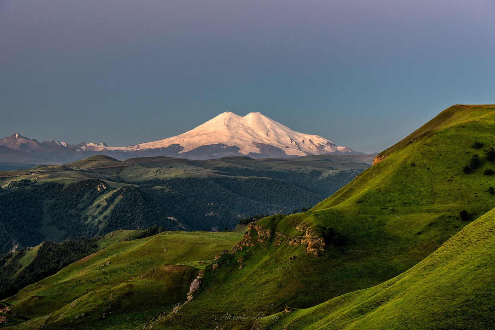

Озеро Байкал
Самое глубокое озеро в мире с кристально чистой водой и уникальной природой. Идеально для экотуризма и зимних приключений.
Сложность: средняя
Сезон: круглый год

Золотое кольцо России
Тур по древним городам с богатой историей и архитектурой. Посетите Суздаль, Владимир, Ярославль и другие жемчужины.
Сложность: легкая
Сезон: апрель-октябрь

Горный Алтай
Горные ландшафты, чистейшие реки и озера. Отличное место для трекинга, рафтинга и конных прогулок.
Сложность: высокая
Сезон: май-сентябрь

Санкт-Петербург и Петергоф
Культурная столица России с дворцами, музеями и разводными мостами. Петергоф - жемчужина дворцово-паркового искусства.
Сложность: легкая
Сезон: круглый год

Камчатка
Долина гейзеров, вулканы и дикая природа. Уникальный опыт для любителей приключений и фотографов.
Сложность: высокая
Сезон: июль-сентябрь

Восхождение на Эльбрус
Самая высокая точка России и Европы. Маршрут для подготовленных туристов с опытными гидами.
Сложность: экстремальная
Сезон: июнь-август